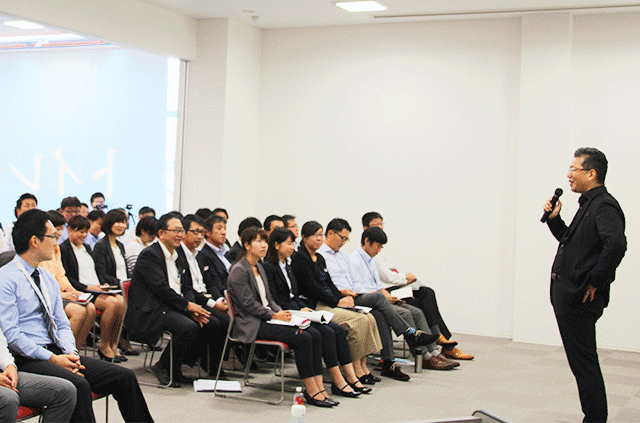
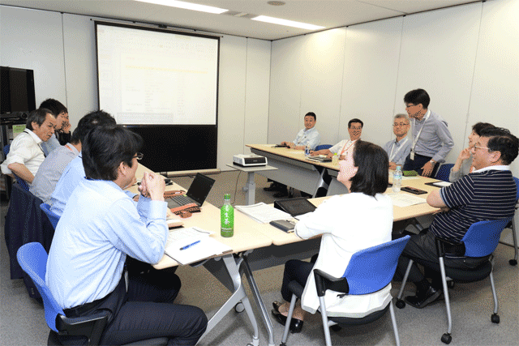
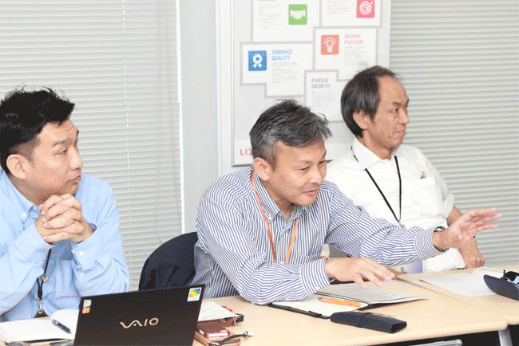

LIXILは、従業員が問題意識を持って意見をオープンに発言できること、そして自らが常に変化し挑戦し続けることが重要であると考えています。LIXILが目指す方向性や戦略を理解し、社員が誇りを持っていきいきと働ける職場としていくために、全従業員を対象とした意識調査「LIXIL Heartbeat(ハートビート)」を2015年から隔年で実施し、従業員の声を反映しながら、仕組みづくりや職場環境の改善を積極的に行っています。キャリアアップのための自己申告制度やスキルアップ研修、評価制度など、一人ひとりの多様性をいかし、さらに組織力の強化につながる改革に取り組んでいます。
すべての従業員が働くことを楽しみ、自分の仕事に誇りを持てる会社となることを目指して、現在、働き方を見直し、ワークライフバランスを充実させるためのさまざまな施策を進めています。フラットでオープンなコミュニケーションが取れる環境づくりを推進するための行動ガイドラインや会議マニュアルをはじめ、人事規程の改訂や生産性向上に向けた意識改革など、こうした働き方改革の一連の施策を「変える！はたらく スタイル」と名付けました。
最近では在宅勤務以外の執務場所として、サテライトオフィス勤務の取り組みを試験的に実施しています。
LIXILで働く私たちの業務すべてが、"世界中の人びとの暮らしをよくすること"につながっています。従業員一人ひとりが自らの仕事に誇りを持ち、プライベートを充実させる働き方を実現するのがLIXILの働き方改革です。また、これを実現するためにすべての従業員が当事者意識を持って考え判断し、相手を理解しようと努め、小さな実験を繰り返し、失敗したとしてもそれを学びに変える、といった目に見える行動を体現する必要があります。この「変える！はたらく スタイル」を社内に浸透させるため、全国キャラバンによる経営幹部との対話や、デジタルを活用した社内サイトへの投稿など、従業員全員の意識改革を進めるさまざまな施策に取り組んでいます。
従業員が自らの働き方を考えていくため、CEOの瀬戸が各地で直接思いを伝える「変える！はたらく スタイル キャラバン」をスタートさせました。働き方を変えるために、自らの言葉で経験や思いを語る講話、参加者との質疑の後、具体的にどのように行動する必要があるのかを参加者が自分事として考えるワークショップを実施しています。
ワークショップでは、理想の職場と現状のギャップや当日の講話や質疑を通して感じたことを振り返り、一人ひとりがLIXILで働くことが楽しく、一員でいることに誇りを持つために必要なそれぞれの課題を考えます。そして、各課題を解決するために習慣化させる行動として「何をする」のか、または「何をやめる」のかを決め、グループ内や参加者の前で宣言します。
参加者からは「褒めることから始め、敬意を持って接する」「仕事内容の見える化や共有化をより積極的に行う」などの具体的な宣言がありました。
今後、このキャラバンを全国の主要拠点で開催していきます。
新たな企業文化を育むためには、従業員一人ひとりの意識改革が欠かせません。LIXILは個々の文化を持った5社が統合して誕生した、という原点がありますが、この多様性を私たちの強みとしていかしていくためには、自ら変化を起こし成長していくことが重要です。
「すべての従業員が、当事者意識を持ち、主体性を持って判断し、自ら進んで実践する」ことを掲げ、会社全体の共通言語、軸となるよう「LIXIL行動ガイド」を作りました。
行動ガイドでは、より具体的な事例を示しています。たとえば、役職呼称を撤廃し、お互い「さん付け」で呼びあう。社内メールでの形式的な挨拶や慣用的表現の撤廃。また、社内メールシステムで顔写真の掲載を推奨し、個と個のコミュニケーションを行うことの自覚を促すなど、すぐ実践できる具体策を示しています。
この行動ガイドの社内発信後、CHROの松村をはじめ各組織の人事部長が一堂に会し、その浸透状況と今後のあり方についてについて語り合う座談会を開催しました。
座談会の終了時、人事部長や各部署の上司が率先して「LIXIL行動ガイド」を実践し、自然な社内文化の醸成に引き続き努めていくことを確認しました。